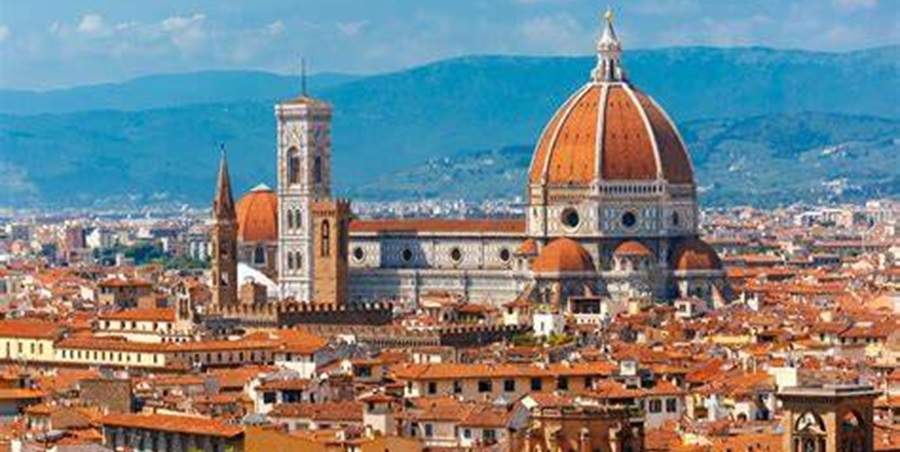
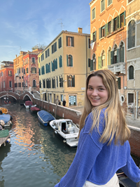

Welcome!
Hi and welcome! Whether you're planning your own study abroad adventure, reminiscing about past travels, or just curious about life in another country, you’re in the right place.
Studying abroad is more than just going to class in a new place. It’s about discovering different cultures, making new memories, and stepping outside your comfort zone. Here, I’ll be sharing personal experiences, tips for navigating life in a new country, and insights on everything I was lucky enough to expierence.
I had the incredible opportunity to study in Florence, Italy, a city full of history, art, and amazing food. While abroad, I also traveled to nine other countries and explored countless cities, each with its own unique experiences. I’ve learned so much along the way, and I can’t wait to share those adventures with you!
So grab a coffee, and join me on this journey. Let’s explore the world together!
